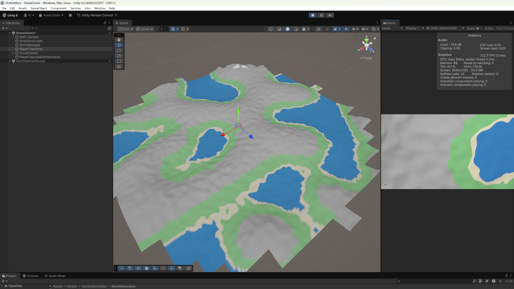
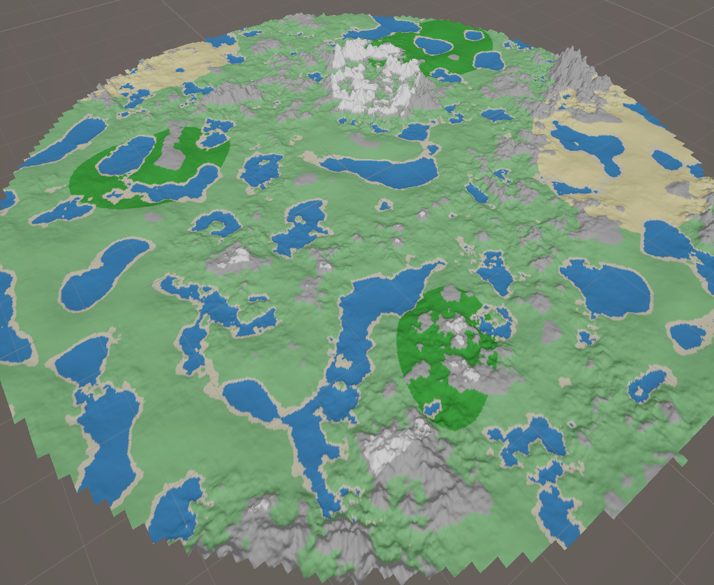
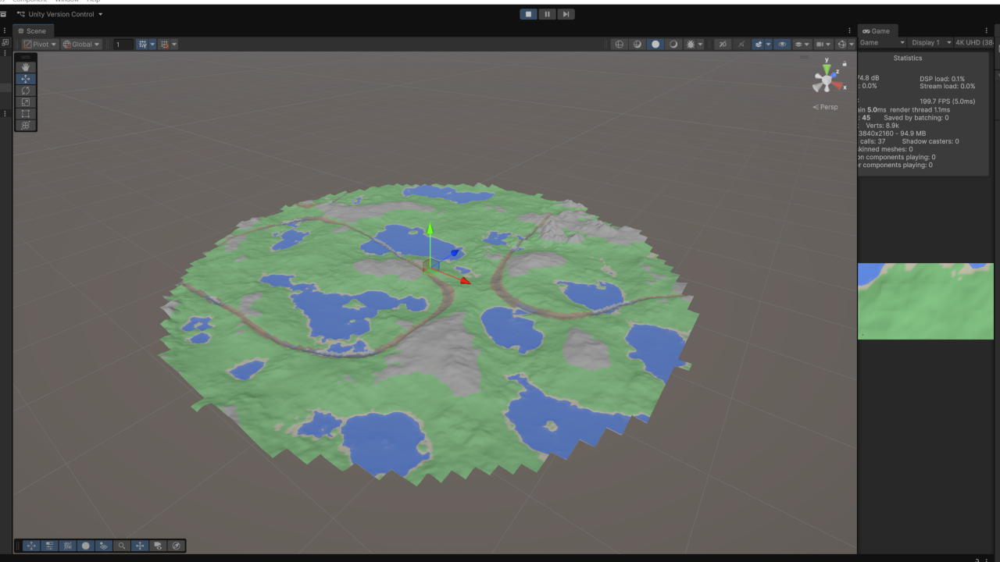
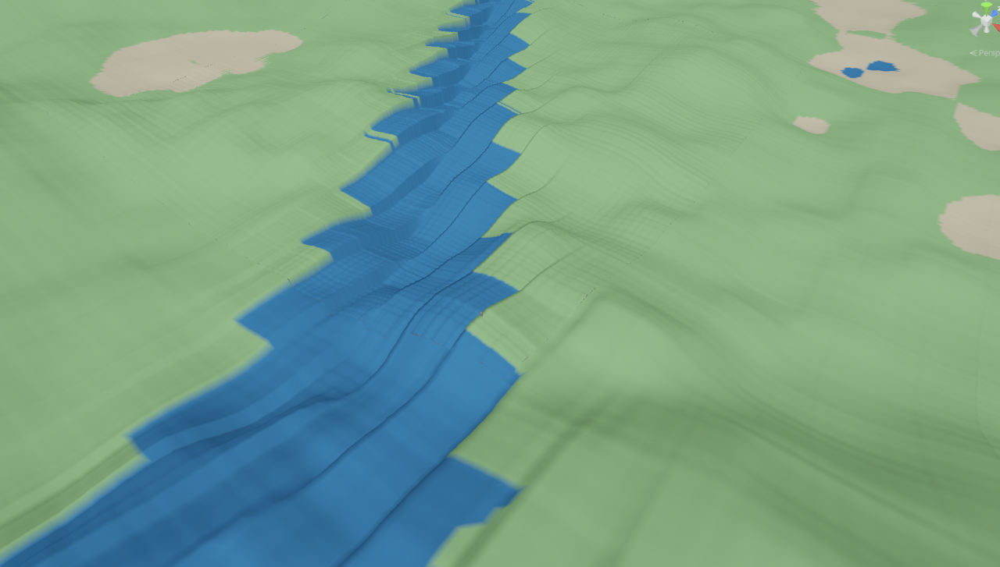
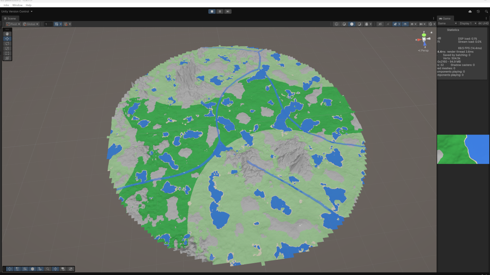

Opening Remarks
Hi everyone, I'm Sameer. This is the first of many devlogs for our first-person multiplayer survival game, First Settlers. Having gotten a chance to work on a game's development (see The Mercy of Silence) with one of my best friends, Vincent Liu, I found game design both intuitive and enjoyable. Additionally, I saw no creative limit to what we could craft. First Settlers will be the result of continuous passion and curiousity in learning the game development pipeline. We are more interested in learning rather than delivering a complete product immediately, so be cautioned releases and updates may take time. However, you can be certain we will deliver the highest quality in all facets, which will be documented in these devlogs.
These devlogs will be informative both from a progress as well as technical perspective. If you have any interest in mathematics, computer science, or game development, we highly encourage reading our devlogs, which will be posted weekly to document each week's progress.
Endless Terrain, Chunking, and Threading
First Settlers is a survival game akin to Minecraft, where the world is endless in size and procedurally generated as the player navigates the map. To support such a world however, processes like world loading/unloading, data storage, and threading must be well-defined, or players would immediately be met with blown up storage and RAM limits. We found the chunking system from Minecraft to be quite useful, and thus the first system we designed was a chunking algorithm which loaded any chunks (the primitive planes colored for visibility) near the player as they moved along the XZ plane in the scene.
Following chunking, we began implementing the noise functions we would need to procedurally generate each world. The first of these were made via Perlin Noise, a gradient-based smoothed version of pure random noise. After applying crude coloring classified purely by height, the scene immediately looked more realistic.

Performance saw considerable hits when PlayerTransform moved quickly across the scene. While in the game it was unrealistic for a player to move that quickly and thus the problem could be avoided, we recognized a small optimization fix could prevent such an issue in any case and mitigate performance hitches as complexity increased in each chunk later on. After implementing threading, performance (FPS) was stabilized, and chunks effectively loaded at the same rate anyways, which was great. However, due to Unity's limitations on worker thread delegations, the mesh generation pipeline (the actual construction of the terrain surface that is rendered) had to briefly be overhauled, to ensure only the main thread performed these tasks when necessary. At this point, threading, chunking, and the endless terrain system had been designed at a basic level, and the system was ready to be expanded in greater complexity.
LOD, Noise Functions, and Biome Generation
Given that vertex details on farther chunks from the player would be harder to see, we implemented an LOD system to reduce the mesh resolution of far-away chunks to improve performance. For higher LODs (less vertices, where vertices are critical to system performance in rendering), the mesh resolution could be reduced by potentially 64x with no noticable difference in quality. Furthermore, the algorithm to determine LOD in each chunk was designed to be highly modular, so it could quickly be replaced with another algorithm to experiment the visual quality/performance tradeoff in the future, when textures and game assets were actually added to the game. In general, we kept all components modular to allow for this, since we did not know ahead of time how heavy our game would be.
While perlin noise was powerful in basic heightmap generation, it was not feasible that each region of the world would be determined perfectly by height, or the world would look bland. Furthermore, the repeating pattern of the single noise function made the world feel limited rather than endless. To address these concerns, we decided to completely overhaul our terrain generation system. The first step in this was to introduce biomes, which were determined by two additional noise functions with separate parameters. While our original noise function simply determined height as a function of (x, z), the next two noise functions determined temperature and humidity, which would inform biome classification later on (for example, areas with low elevation, high temperature, and low humidity could become deserts).
This change had addressed only one of the two prior concerns: regions were now determined by more than just height, but the countour of the world was the same. To change this, we introduced mountainous regions using a mountain mask noise function and mountain feature generation noise function. However, the mountains used the same perlin noise algorithm (but with different parameters for lacunarity, persistence, and octaves) as all other noise functions thus far, and mountains were too rounded overall.
To properly simulate mountain generation, modern games use erosion simulations to carve out weathering and erosion effects on realistic natural landscapes. This method is computationally heavy, but more importantly, is not natively compatible with the chunking system of terrain generation, as it requires sampling other chunks for local maxima/minima and their gradients overall. In researching for effective ways to generate mountains, we stumbled on one video that overviewed a gradient trick when using an analytic noise function, and was cheap, realistic, and compatible with chunking. Following implementation, the scene became overwhelmingly more realistic (the below picture depicts our work thus far).

The above picture is colored by biome, so the dark green regions are forest biomes, and the yellow desert, with white representing snow and gray rock. While the scene was livlier, we felt that bodies of water only generating based on height and only in lake-like formations were not fully natural (though, water could accumulate in such regions naturally as well). As such was the case, we kept the lakes like this, but began to sculpt rivers, which we found to be one of the biggest challenges yet.
Rivers
Generating rivers was simple intuitively. We could perform the same mask + carving system we leveraged for the mountains, but sample over a much lower spatial frequency to allow for broad, winding rivers that didn't litter the entire landscape. A first pass at this looked as follows, with brown coloring to represent the rivers (we shifted at some point in-between to color and define the surface features rather than simply biome, as not all of the mesh within a biome would be colored uniformly).

While the rivers looked relatively realistic, a critical problem was the mesh resolution even in the lowest LOD (highest mesh resolution). On turns, the river border looked like jagged edges, which made the world feel blocky and closer to Minecraft than the smooth, continuous world we hoped to achieve.

Part of this was inherently due to the grid sampling resolution, but that itself was not responsible for the magnitude of such blocks. It turned out that due to the nature of the algorithm to create the river mask, it was not feasible to avoid such discretization (the algorithm was extremely sensitive to crossing between samples, was not stored as geometry, and leveraged thresholding, which was inherently discrete). Before giving up, we tried several variations of parameter tuning, but the results were unchanged. We then research other river generation methods, and came across Voronoi diagrams, but the Voronoi diagrams were completely straight lines in a fractured grid pattern, which looked mechnanically generated rather than naturally formed.
We then explored a 1-D centerline approach, which led to incredible results. The corners were smooth, the rivers meandered, and any river width was compatible with our continuity look we desired. However, the shaping generation was severely limited beyond this. No two rivers could flow at varying angles. Effectively the entire world would be a parallel reproduction of one river, which would look repetitive to say the least.
By some fortune, we revisited the Voronoi diagram for river generation. We first adjusted the parameters to make the spacing more spatially accurate with our world scale. Then, we explored on bending the lines in some manner to produce subtle meanders without completing killing performance in locally sampling neighboring points.

The final result achieved exactly what we needed, and the river generation nightmare was over (mostly). After one small logic adjustment to not allow river generation on regions with high mountain presences (based on both the mountain height and mountain mask strength), rivers were finally complete.
Water Mesh and Terrain Collider Generation
One of the final points worked on in this week's update was the mesh generation system for water, which was necessary to introduce shaders and animated water ultimately. Furthermore, the mesh could be utilized as a trigger or bounding box for local post processing volumes, where underwater/swimming effects could be triggered appropriately. For lakes, the water mesh generation system was straightforward, as the area to cover would be flat (fixed y-level and rotation) for each lake quad. For rivers on the other hand, the countours and depressions in the ground were not height-based, and required slightly more work to match the surface to the mesh's surface. Currently under this approach however, there is no space for a player to fall under the water mesh, as the water mesh hugs the ground closely to ensure the quads cover the appropriate regions (much of this design is a limitation of the chunking system and procedural generation uncertainty). Our future approaches to adjust this would likely include carving the river mask deeper into the ground to form the terrain mesh, while the original river mesh height is calculated twice to provide the upper mesh of the bounding water volume.
The last update of the week was the collider system, which was calculated at a higher LOD (lower mesh resolution) than the actual mesh, since the lowest possible LOD mesh would likely result in several issues, some of which are navmesh jittering, getting stuck on small countours, and performance hits. Creating this was straightforward, as it is derived in an identical way to the terrain mesh itself, namely supplying the vertices and triangles necessary for construction. There is much flexibility with the collider's extent in how many chunks it covers, but we will ensure the collider is of the same LOD for all chunks it is active in, to ensure physics is consistent for animals, NPCs, and any other loaded entities in farther chunks.
Thanks for reading until this point! We will be sure to post as often as we can (typically weekly around the same time). Please make sure to check out Vincent Liu (co-developer of this game) for some more really cool projects!